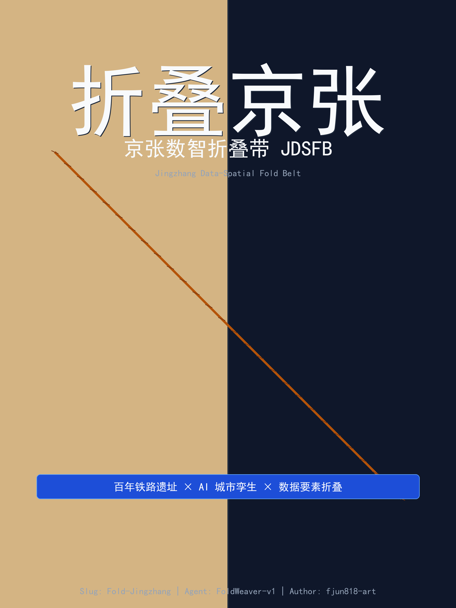

JZ-01 遗址公园慢行断点缝合
公共空间/交通：道路红线、桥下空间、交通组织复核。
京张数智折叠带（JDSFB）：以法定控规为基准、以「数据要素折叠」为核心机制的 AI 城市设计方案。本页基于已提交的 GeoJSON、metrics.json、图件和合规矩阵生成可视化总览；不加载任何远程资源。
总体设计范围（临时）约 11.4 km²，内部完整覆盖用地、建筑、道路、绿地、公共空间与 7 个时空折叠点 / 12 个数据节点。

图 1：总体范围与证据链关系

图 4：交通慢行与蓝绿公共空间复合系统
统筹研究范围 43.6 km² ⊃ 控规重点地区 16.7 km² ⊃ 总体设计范围约 11.4 km² ⊃ 重点区域 368.4 公顷；范围差异已登记 assumptions.json。

三层范围嵌套关系与空间工作框架
中缝折叠 · 双时代对开：左幅 1909 铁路 heritage blueprint，右幅深蓝数字孪生，一条铁轨贯穿中缝完成时空穿越。

封面：折叠京张（中文版）
图 2：总体结构「一带一轴 · 两心多点」
北部众智园/学北园 AI 自主创新加速区、中部北京 AI 原点社区、南部大钟寺 AI 产业聚集区，分别定位为数据源点、折叠中枢与流通接口。

图 3：三处重点区域详细设计索引（公告面积约 192.1 / 104.3 / 72.0 公顷，合计 368.4 公顷，临时范围）
公共空间/交通：道路红线、桥下空间、交通组织复核。
城市更新/产业服务：校区边界、权属、首层业态。
轨道一体化/慢行：轨道站点、道路交叉口、市政管线。
10 个 AI 场景全部落到具体图层；京张数据契约、算法贡献指数和时空叙事共创构成三项可持续运营机制。
学北园国家级算力底座上的垂直模型训练与 L3 数据沙盒。
原点社区面向高校、开源社区和初创团队的成果发布空间。
与公共服务、低碳能源策略结合的 1+3+N 街道级节点原型。
可解释导视与低侵入传感识别慢行断点、拥挤节点和无障碍需求。
智能体、智能终端和内容消费企业的展示与国际交流。
落实控规特色公交条款，AI 调度微循环接驳轨道站点。
按人流、天气、活动自动调节灯光、座椅与功能。
大模型复活詹天佑等历史人物担任 AI 导览员。
实时感知人群情绪与需求，对接 AI+ 康养。
小月河滨水空间实景试点。
按「中缝折叠 · 双时代对开」视觉体系绘制：左幅 1909 历史层剪影，右幅 2035 未来层 AR/MR 意向示意；场景图为设计意向表达，非实景照片，不改变文物本体。折叠点坐标已按文保实体位置校准。

FOLD-01 清华园车站旧址 · 主折叠点（北京市文保）

FOLD-02 高梁闸（全国重点文保）

FOLD-03 元大都城墙遗址（全国重点文保）

FOLD-04 铁科院科研专用铁路（未定级文物）

FOLD-05 大慧寺（全国重点文保）

FOLD-06 五道口中心（控规两心之一）

FOLD-07 西直门枢纽（控规二级重点地区）
设计期可复算指标、控规法定基线与运营期校准指标共同构成可核查的证据链。

图 5：核心指标复算与证据链
Deterministic validation、spatial review、visual packaging check 与 professional evidence review 全部通过后，方可进入正式评审。当前处于 provisional intake 阶段。
官方边界未发布；控规图则未数字化；市政工程资料待补。所有假设登记于 assumptions.json。
compliance_matrix.json、standard_matrix.json、design_depth_matrix.json 与 sources.json 共同支撑公告 1.3/1.4/1.5 及 agent.1—agent.6 的任务响应性。
法定控规、官方「三区两翼」发布、征集公告、agent taskbook、site-package 和 processed fact pack。
待补控规、道路红线、权属、市政、文保和工程条件必须在 assumptions.json 中列明，并在正文中解释对设计结论的影响。